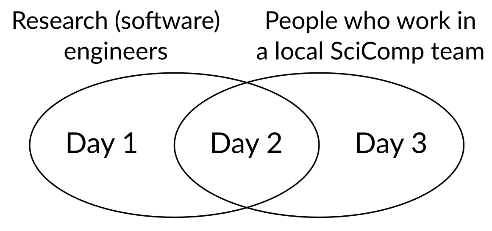

Nordic Basic Scientific Computing 2026
Finnish (+ friends) RSE Meetup
About the Event
The Finnish and friends RSE (Research Software Engineer) Meetup brings together people in Finland (and beyond) who develop or support research through software, data, and computing. Whether your title is RSE, scientist, data specialist, or IT support, if you’re helping research through code or computational tools - this event is for you. This is also for you, the RSE enthusiast, who enjoys the coding part of research work more or just as much as the research part.
Why a Finnish RSE Meetup?
While Nordic-RSE connects the regional community, this Finnish meetup provides a national focus for collaboration and sharing. It helps us:
Discuss challenges and opportunities specific to Finnish institutions and funding structures
Strengthen local networks and identify national needs (training, recognition, career paths)
Coordinate efforts between universities, research institutes, and infrastructure providers like CSC
This meetup complements the Nordic-RSE community by creating a space for practical cooperation within Finland, while staying connected to the wider Nordic and international RSE movements.
Who Should Join
Researchers and research software engineers developing or maintaining research code
Data and computing specialists supporting research workflows
IT staff, educators, and research managers interested in improving research software practices
Early-career researchers curious about RSE career paths
No formal RSE title is needed - if you develop, or support research software, you belong here.
Why Participate
By joining, you can:
Meet peers from across Finnish universities and research institutes
Learn how RSE groups and initiatives are organized in Finland
Share your own experiences, needs, and ideas for national cooperation
Help shape the future of Finnish/Nordic RSE activities - training, recognition, and community events
Good to know
This part of the event is sponsored by the Society of Research Software Engineering. Therefore we can keep the registration for free and offer lunch, coffee and snacks during the event. Therefore, please only register to this second half of the event, if you plan to attend in person to avoid any food waste.
Travel funding
Thanks to the Software Sustainability Institute we have some travel funding (travel + one night accomodation) available for you to visit the RSE-FI meetup (day 1+2).
More information at Travel funding for the RSE meetup
Organizers
The meetup is organized by Finnish members of Nordic-RSE with support from the Software Sustainability institute (via SSI fellowship of Samantha Wittke). Facilities are provided by Aalto Scientific Computing (ASC).
For any questions, ideas or if you would like to join the organizing committee, please contact samantha.wittke@csc.fi.
Scientific computing team meetup
About the event
This meetup is targeted towards people in local Scientific Computing (SciComp)/Research computing/Research Software Engineer support teams, for example university local HPC teams. We work in local capacity and are often overshadowed by the big national e-infrastructure providers (CSC, EuroHPC, etc) in attention and funding, yet we are the ones “on the ground” with the researchers. What’s our place in the world?
We have our own unique challenges and opportunities. This is a time we can talk together and learn from each other. (Others are of course welcome.) Maybe we can make a strategy for working together or getting some national funding?
Who should join?
For example, many of the teams that were part of the old Finnish Grid Infrastructure at univerities or local partners of the CodeRefinery collaboration. Really, if you work with Aalto Scientific Computing you are strongly invited and we’ll have some fun discussions. If you don’t, you are invited anyway.
Academic conferences usually don’t suit us, but we need a community. Our job is important and challenging, and we can’t do it alone. NoBSC is the right level for the networking we need to succeed at our jobs.
In this first iteration, we especially welcome people who support academic research through computing and data expertise in universities and research institutions, for example those in local HPC or RSE teams, cloud computing, and other computing services for researchers. But everyone is welcome: including those who might want these kind of jobs in the future.
Program ideas
We can especially talk about:
Local resources and teams in a time when computing is becoming more centralized.
Local services we run, how they compare to national services.
Advantages and disadvantages of being positioned locally.
What types of infrastructure funding we could apply for to increase our benefit or make (inter-)national collaborations. (Dedicated session: Wednesday afternoon)
Cool things and problems
Everyone will have a chance to (and be encouraged) to contribute to the session “Cool things and problems”. In this, each team presents three cool things they are doing, and three problems they are facing. We can then see.
Good to know
There is no registration fee, but also no food, snacks, coffe, and dinner provided for this part of the event. We will have to divide into smaller groups for lunch and dinners and distribute to various restaurants.
Organizers
Richard Darst (richard.darst atsign aalto.fi) is organizing this half.
Practical info
Location
Dipoli building, Aalto University Campus, (Espoo), Helsinki Area. If
you search Dipoli in a map service it should find it, the address
is Otakaari 24, 02150 Espoo.
The main room is “Palaver” and there should be signs pointing you that direction (it’s also exactly marked on the map below). If you arrive for lunch you can find us on the 2nd floor Metso restaurant (not the Reima student restaurant that is next to it).
FAQ
Questions from attendees will be placed here for your reference:
.
.
.
Food
For the Finnish and Friends RSE meetup on Monday/Tuesday we will have food available according to dietary restrictions provided during registration. For others we will have a reservation at restaurants in the campus area. These restaurants can generally cater to all common diets, including vegetarian, vegan, gluten free, and lactose free. There are also two grocery stores at the metro station (A entrance).
Map
Tourist information and other activities
Wikivoyage Helsinki is usually pretty accurate and has information about the area and other sights to see.
Hotels
There are various hotels within easy walking distance. We don’t have any particular discounts. “Radison Blu Otaniemi” is the default location for university visitors. Other hotels in Helsinki downtown are fine also, the metro trip is 11 minutes (and costs ~3 euros).
Arrival
tldr: Aalto University is at the “Aalto University” metro stop. An “ABC” ticket manages the train from airport AND metro (and trams, busses, etc).
Air: Helsinki Airport. Between the airport and Aalto University, plan for max 1.5 hours (less than one hour is possible if you are efficient). From the airport, follow signs to the train station. Board a train and immediately use a contactless payment card to buy an ABC ticket at a card reader; this will get you all the way to the university (see public transport). Take the first train that comes (either way gets to downtown in about the same time). From the main station, walk to the connected metro station. Take a metro to the stop Aalto University (direction Tapiola or Kivenlahti), then continue in section “public transport” below.
Ferry: From Tallinn or Stockholm, there are ferries. Expect well under an hour to get from the ferry harbors to Aalto University. Take trams to the metro, but from each harbor walking to the metro is reasonable (not too far and nice walks). (Some attendees are also attending the Nordic e-infrastructure Conference in Tallinn on 27-29 May, they will be taking ferries from Tallinn the evening of 29 May. More info to be announced)
Bus, Train, etc. within Finland: You probably know how to get to the center of Helsinki. Follow public transit below.
Private vehicle: There isn’t free parking, but there are paid lots around.
Public transport: The public transport system is good and easy to use. The metro stop name is “Aalto University”, and the A exit is closer to us. Tickets can be bought at ticket machines, or via the “HSL App”. Aalto University is in the zone B, downtown is in the zone A, the airport in zone C, and tickets last a bit more than an hour and work on any public bus, train, metro, or tram (and as many transfers as you need). AB zone tickets cost about 3€.
If coming from airport: use single tickets, day tickets not worth it even with one extra trip to/from downtown.
Now, all tickets can be bought using contactless payment cards (details). Select the appropriate zones (AB or ABC) at the blue readers (before getting on the metro, after boarding bus/train/tram), then show your card. More info and ways to pay.
Code of conduct
Attendees are expected to follow the Aalto University code of conduct. Realisically you won’t read it, so here the general idea :
There will be attendees at a wide variety of points in their RSE/SciComp career. Try to understand them and help them go.
There will be attendees who know more or fewer other attendees. Take active steps to include them in your conversations:
Leave spaces in your circle for others to join, if you see someone hovering, invite them in and fill them in on what you are talking about.
Give special attention to understanding who is in your discussion groups and making sure you are talking at the right level.
This is a bottom-up event to support your networking. Please help out if see something to improve and you have time and ability.
Tell Richard or Samantha if you need something.
About
Organizers
Richard Darst, Aalto University (co-lead, RC/SciComp part)
Samantha Wittke, CSC - IT Center for Science (co-lead, RSE-FI)
Luca Ferranti, Aalto University
Ina Pöhner, University of Eastern Finland
Local volunteers: open
The organizers welcome others to take part in planning, either in short or long term. We communicate via the CodeRefinery chat, #NoBSC channel. This is the same place that Nordic-RSE people hang out.
Supported by
Aalto Scientific Computing (Science-IT): Staff time, sponsoring all facilities
CSC - IT Center for Science (EuroCC2 project) : Staff time
Software Sustainability Institute (through fellowship of Samantha Wittke): Travel funding, planning support
[Society of Research Software Engineering](https://society-rse.org/) : Catering support
History of NoBSC
You could say this event was first inspired when Richard Darst went to the Nordic e-Infrastructure Collaboration conference in 2017. This event had a variety of infrastructure and open science people not advertising why their stuff was so good, but discussion how to make things better. (At least that’s what it looks like with rose-colored glasses looking back.) This also kicked off the collaboration between ASC and CodeRefinery (a NeIC project dedicated to teaching basic software tools for researchers), which continues to this day.
CodeRefinery didn’t feel like a collaboration not between organizations, but between the people in the trenches directly helping or users. This was an extremely productive collaboration, not just in the main teaching but in connecting people together to talk about their other jobs besides teaching.
In 2019, we had a meeting it Helsinki called Nordic HPC, basically a lot of the CodeRefinery staff who were supporters of smaller university-based computing clusters. We enjoyed talking and sharing ideas, but soon we became closer together because we were all working online, and our collaboration was focused on online events.
Now, in 2025, we are trying to meet again in person. Hopefully there are the best parts from NeIC conferences, NeIC all-hands meetings, and NordicHPC, with even more people welcome to attend.
In addition to the SciComp team meetup, we have noticed that Research Software Engineering community, or “researchers who code” appreciate the connection to each other too - and there is a lot of connections and career movement between the two groups. Samantha’s fellowship with the Software Sustainability Institute looks at exactly that. Part of the fellowship is the contribution to the international RSE survey to get to know the Finnish and Nordic community needs a bit better. A short lunch meeting of RSE enthusiasts in Espoo to celebrate the international RSE day on October 9th 2025 was a good start to connect. For the Finnish RSE meetup, we aim to also get together RSE enthusiasts from all over the country, share what we do, learn from each other and also learn about the needs and wishes of the community.
Call for contributions
The theme of this conference is how we actually work and “the problems we found along the way”, not “advertising our product”. You can present ideas, what you couldn’t do, things you need advice on, and so on. You can request time slots for lightning talks, normal talks, posters or suggest a discussion session. If there are too many long talk requests, we will open a voting for the time to not have to decline any submitted talks. Only the length may change.
RSE-FI vs SciComp teams
You can submit to either part in advance, but
RSE-FI is more focused on advanced submissions
SciComp teams is more focused on being an unconference (we collect ideas dynamically during the meeting and allocate time then)
Abstract submission link
Submit a contribution
You’ll be able to submit talks, demos, or posters you’d like to present.
Our facilities include one main room (reserved), one breakout room (reserved), and several informal spaces throughout the building’s lobby areas that can be used for smaller discussion sessions (not reserved).
Selection process: We will review all submissions to make sure they align with the spirit of the event. Our goal is to accept as many contributions as possible. If there are too many long talks submitted, our plan is to let attendees vote and allocate time slots based on those votes. When submitting, please keep your abstract concise and accessible to a general audience.
In short: Your contribution will most likely be accepted, the main question is how much time you’ll have to present.
Deadline for submissions to get into the program is January 20 end of day in Nordics.
You will get to know about the length of your talk on January 21.
Contribution inspirations
You are allowed to come with a question instead of a solution.
Introduction to how my team/organization works.
Cool procedure/practice/tool we have developed.
Cool software I have developed.
Book/video/event review and summary.
Problem or concern I am facing now.
Demo or poster about something you would like to have input on.
You can request how long your session should be: lightning talk (10 min), 20 min talk, poster/demo spot. You will get to know your assigned length in time before the event.
Unconference
We’ll also set aside time for an unconference: sessions that can be proposed or requested on the spot during the event. Maybe you’ll invite someone to run a session inspired by an informal coffee conversation, or you’ll discover that several attendees are curious to hear more about something you’re working on. The unconference time is meant exactly for those spontaneous, interest-driven sessions.
Schedule
When to attend
For the Finnish-RSE meetup, attend lunch on 2 Feb to lunch or dinner on 3 Feb.
For the SciComp team meetup, attend 3 Feb until lunch on Feb 4.
The overlapping day is events of interest to both groups.
You are of course welcome to attend more, if you would like.
Schedule
Timetable
Monday (2 February)
| Palaver
Main room |
Klondyke
Parallel room |
Other | |
|---|---|---|---|
| 11:30 |
Arrival and registration
Registration and lunch info |
||
| 12:00 |
Lunch (included)
2nd floor, Metso restaurant (not Reima student restaurant) |
||
| 13:00 |
RSE meetup intro
Samantha Wittke, Richard Darst |
||
| 13:30 |
Sharing GIS Tools Across Disciplines: Hard Choices, opportunities, and Trade-offs
Kamyar Hasanzadeh TargetCAT: When a Script Refuses to Stay Small Ina Pöhner, Rafael Lopes Almeida |
||
| 14:30 |
Break
With coffee & small snacks |
||
| 15:00 |
Discussion session
Topic TBD |
||
| 16:00 |
Laptop session
Luca Ferranti |
||
| 17:00 |
End of day
Rooms remain available |
||
| 18:00 |
Dinner
Fat Lizard (own expense, confirm participation by afternoon coffee break) |
Tuesday (3 February)
| Palaver
Main room |
Klondyke
Parallel room |
Other | |
|---|---|---|---|
| 09:30 |
Keynote - The RSE community in the United Kingdom
Jeremy Cohen |
||
| 10:30 |
Break
With coffee & small snacks |
||
| 10:45 |
Towards FAIR file formats: a case example with Origin & Python
Julia Niskanen Realization: it's SymPy Frankie Robertson |
||
| 11:45 |
RSE meetup wrapup
Samantha Wittke, Richard Darst |
||
| 12:00 |
Lunch (self-paid)
2nd floor, Metso restaurant (not Reima student restaurant) |
||
| 13:00 |
SciComp team meetup intro
Richard Darst, Samantha Wittke |
||
| 13:10 |
Cool things and problems
Darst facilitates, everyone may present |
||
| 13:45 |
Role of SciComp and RSEs
Heikki Manila |
||
| 14:30 |
Break
With coffee & small snacks |
||
| 14:45 | Unconference: How can we get users to ask for help? |
Unconference: Everything, everywhere, all at once
If "AI" can mean anything, how do we support "AI"? [Slides](https://docs.google.com/presentation/d/1gHIibVQdsvu1YoKDVtzleL1MZCvsWuXTqASLeeLRXCU/edit) |
|
| 15:45 |
Hardest legal questions
Maria Rehbinder |
||
| 16:30 |
(session)
Further discussion |
||
| 17:00 |
End of day
Rooms remain available |
||
| 18:00 |
Dinner
Itsuyaka, Tapiola (own expense, confirm participation by afternoon coffee break) |
Wednesday (4 February)
| Palaver
Main room |
Klondyke
Parallel room |
Other | |
|---|---|---|---|
| 09:30 |
Unconference: VSCode and AI agents on HPC?
Should we embrace, accept, prohibit, or ...? |
||
| 10:00 | Panel discussion: Scientific computing experience | ||
| 10:45 |
Break
With only small snacks |
||
| 11:00 |
Unconference: hallway track
Further discussion with the panelists Unconference: OpenCompose on OnDemand Demonstration of the job composer Unconference: keeping the community going We'd like to meet again in a year, now what? |
||
| 11:45 | Concluding remarks | ||
| 12:00 |
Lunch (self-paid)
2nd floor, Metso restaurant (not Reima student restaurant) |
||
| 13:00 |
Local team funding discussion
(if there is any interest - no plans yet) |
List of sessions
This list currently only has the pre-planned “keynote” sessions invited by the organizers for the SciComp meetup (the second half).
Monday (2 February)
RSE meetup intro
- Contributors: Samantha Wittke, Richard Darst
- Time, Location: 13:00, Palaver
Introductory words.
Sharing GIS Tools Across Disciplines: Hard Choices, opportunities, and Trade-offs
- Contributors: Kamyar Hasanzadeh
- Time, Location: 13:30, Palaver
As GIS methods spread into interdisciplinary research, researchers are increasingly expected to package their workflows as usable software for others. In practice, this is far from straightforward. This talk reflects on several common ways of sharing GIS tools—commercial extensions (e.g. ArcGIS toolboxes), open-source plugins (QGIS), standalone desktop applications, web apps, and simply releasing code—and the challenges that come with each. These include technical maintenance, licensing constraints, usability for non-GIS experts, reproducibility, institutional dependencies, and long-term sustainability. Rather than advocating a single solution, the talk examines both the advantages and the challenges of each approach, using these trade-offs as a starting point for discussion on how researchers and research software engineers can make more realistic and context-aware decisions when sharing GIS methods for interdisciplinary use.
TargetCAT: When a Script Refuses to Stay Small
- Contributors: Ina Pöhner, Rafael Lopes Almeida
- Time, Location: 13:30, Palaver
Imagine a project where a handful of researchers all try to do the same thing - except everyone does it manually, in their own way, and the one automated step crashes regularly due to poor error handling. Out of frustration with this fragile setup, TargetCAT was born. What began as a small collection of personal scripts to manage and process data on potential drug targets refused to stay small. It quietly turned into a research pipeline that enabled several publications and projects, while itself remaining far from ideal in many places.
In this talk, we use TargetCAT as a case study to explore how research software typically evolves in academic projects: how it survives, grows, and gradually accumulates technical debt. We reflect on familiar patterns such as ad‑hoc workflows, "ghost development" carried out outside funded time, and feature creep driven by scientific needs without corresponding resources. Along the way, the story touches on identity challenges faced by researchers whose work is effectively research software engineering, but is assessed through publication‑centred metrics.
The second half of the talk turns to a reboot of TargetCAT as an open‑source pipeline for an academic–industry collaboration. In this part, we share how earlier missteps and constraints, together with a fresh developer perspective and a conscious commitment to RSE practices from the outset, are shaping its second life. We conclude by teasing lessons learned and opening a discussion on how academic projects might better plan, fund, and recognise software work - and how this could support more sustainable, RSE‑centric career paths.
Laptop session
- Contributors: Luca Ferranti
- Time, Location: 16:00, Palaver
Do you have something cool on your laptop you can't wait to share with others? Have ever been frustrated at traditional poster sessions thinking "This would be much cooler if I could demo from my PC". Join our first "Laptop session", everyone with a computer can join and showcase a demo of something they are proud of, doesn't matter if it is a project, your dot files or something else, join to share with others in a chill environment.
Dinner
- Time, Location: 18:00, Other
We have a dinner reservation at Fat Lizard restaurant. Confirm your spot by the afternoon coffee break. You can preview the menu here
Address: Tietotie 1 (~10-15 minute walk away). The menu will suit almost all diets (note it's a more limited menu than the for small groups).
Tuesday (3 February)
Keynote - The RSE community in the United Kingdom
- Contributors: Jeremy Cohen
- Time, Location: 09:30, Palaver
Jeremy Cohen is an Advanced Research Fellow in the Department of Computing and Director of Research Software Engineering Strategy at Imperial College London. He has been involved in the Research Software Engineering community since the early days and held a research software development role in a research group prior to the existence of the “RSE" term. He has a PhD in Computing from Imperial and held one of the 5-year Research Software Engineering Fellowships (from 2018) that were funded by the UK Engineering and Physical Sciences Research Council (EPSRC). Jeremy is currently involved in a set of different grants relating to RSE and the wider “digital Research Technical Professionals” (dRTP) space that’s developing in the UK to recognise not just RSEs but also research data and research computing infrastructure professionals. He is the PI of STEP-UP (https://step-up.ac.uk), an EPSRC-funded Strategic Technical Platform with a regional focus on developing skills, community and career pathways for dRTPs.
In his talk, Jeremy will discuss how Research Software Engineering has developed within the UK. He will highlight various challenges and opportunities around developing skills and career pathways for RSEs. He will then look at how the RSE community is expanding to represent a wider group of dRTPs in a range of technical roles who provide vital contributions to support and undertake modern digital research.
Towards FAIR file formats: a case example with Origin & Python
- Contributors: Julia Niskanen
- Time, Location: 10:45, Palaver
Open science and FAIR principles have become increasingly important in the last decade. However, the implementation of Interoperability is sometimes challenged by established software and analytical practices. One example of such established software is Origin (OriginLab Corporation, Northampton, Massachusetts, USA), an analysis software with various features involving graphing, statistical operations, and data processing and transformation. Origin output files are comprehensive and can contain entire analysis pipelines; however, the file format (.opju) is proprietary, the software is restricted to Windows and requires a paid license to access all features, and there is no easy option to export all the contents of the file to other formats. Together, these factors impede the implementation of Interoperability. To overcome these obstacles, I have developed a lightweight Python tool, convert-opju, that can be run within Origin to quickly and systematically export graphs, images, workbooks, matrices and notes to open file formats. While not all objects of the .opju file are currently included, converting the major objects to open formats is a notable improvement to Interoperability. Convert-opju is freely available (MIT License) on Github and Zenodo.
Realization: it's SymPy
- Contributors: Frankie Robertson
- Time, Location: 10:45, Palaver
SymPy looks nice, but it's not a real CAS... is it? In this presentation I hope to show that as well as SymPy scaling down, SymPy is quite a capable CAS for helping to tackle real world problems we might encounter as RSEs. The main content of the presentation is a case study of how SymPy has been a useful tool during my first project as an RSE, working on a simulation of a mass spectrometer, both as a tool for ad-hoc tool enabling DRY and --- using more of its power --- to help design more efficient numerical sampling code. So next time you have some maths to wrangle, I say: "Go on: treat yourself!" (to SymPy)
RSE meetup wrapup
- Contributors: Samantha Wittke, Richard Darst
- Time, Location: 11:45, Palaver
Closing words.
SciComp team meetup intro
- Contributors: Richard Darst, Samantha Wittke
- Time, Location: 13:00, Palaver
Introductory words. Slides.
Cool things and problems
- Contributors: Darst facilitates, everyone may present
- Time, Location: 13:10, Palaver
Our icebreaker of the workshop, and starting point for sharing ideas. Everyone (hopefully grouped into teams from their organization) can present one slide of three cool things they have done lately, and one slide of three problems they are facing lately. We will quickly go through these and use the talk as a starting point for discussion - maybe a few unconference talks can be requested from it.
The session will be built from a shared editable slide deck. Attendees will get contribution instructions (+ more details) closer to the event.
Role of SciComp and RSEs
- Contributors: Heikki Manila
- Time, Location: 13:45, Palaver
What is the role of Research Software Engineers, and teams of them, in universities in the future? Heikki Manilla was president of the Research Council of Finland (then the Academy of Finland) from 2012-2022 and now the director of the "House of AI", an Aalto project helping to connect various disciplines in the use of AI and scientific computing. Heikki will present the funders' side of things and give some vision for how research engineer and scientific computing teams can be made sustainable in the future.
Discussion: The current hardest legal questions in research data and computing
- Contributors: Maria Rehbinder
- Time, Location: 15:45, Palaver
We often hear clear-cut instructions about legal matters in research (copyright, data, ethics, intellectual property, and especially AI these days). Yet humans are behind the scenes, reading and interpreting the legislation, court cases and legal literature and producing these guidelines, and it isn't always so clear-cut. This is a discussion with Maria Rehbinder, Legal Counsel, Aalto University, where we'll peek "behind the curtains" at some of the open questions going around right now, especially related to AI. This will start a two-way discussion about all of these legal matters.
Maria Rehbinder is a Senior Legal Counsel at Aalto University. Her traditional standard projects included copyright, trademarks, and design rights, but more recently has been involved in the initial implementation work of legislation such as the GDPR, AI Act, and Digital Services Act. Maria serves as a member in the Copyright Commission and the Copyright Council of the Ministry of Education and Culture and as a member in the Rights Management Committee of Open Research and Science 2014-2017 initiative of the ministry.
Dinner
- Time, Location: 18:00, Other
We have a dinner reservation at the Itsuyaka restaurant. Confirm your spot by the afternoon coffee break.
It has a buffet with many Asian-type foods. It's at the Ainoa shopping center at the Tapiola metro station, the building above the metro station, third floor. It's one metro stop or a 30 minute walk.
Wednesday (4 February)
Panel discussion: Junior researcher's experience of scientific and HPC and computing
- Time, Location: 10:00, Palaver
Panel discussions are usually full of the most senior people the organizers can find. In this discussion, we'll hear from junior researchers, about how usable they find computing systems and the onboarding process.
Concluding remarks
- Time, Location: 11:45, Palaver
Local team funding discussion
- Time, Location: 13:00, Palaver
We don't know if anyone will be interested in discussing this. If there is no explicit requests, it is safe to assume this won't happen.
How can universities get infrastructure funding for local Research Software Engineer support. How can they work together? This is a discussion, taking into account everything we have learned at the workshop, to make some plans on what comes next. Can we apply as a Finnish Research Infrastructure? Can we form an international NeIC project for this? Any EU opportunities? Is it better to start local? With large computing clusters taking all the hype, what's the role of local people? We will try to figure this out.
Thank you!
Thanks to all attendees, speakers, and unconference hosts. We had a good meet-up, lots of engaging discussions, and formed the seed of a community. We plan a repeat in Tampere (or Turku) in January 2027, and maybe some online get-together before then.
Nordic Basic Scientific Computing is a gathering of everyone interested in supporting scientific computing (and a celebration of the diverse work that makes it all possible). Aalto Scientific Computing invites you to its homebase at Otaniemi Campus, 2-4 February 2026.
This event is split into two halves: The first half is a Finnish+friends RSE meetup , the second half is a meetup of Finnish scientific computing teams more targeted to service staff. The overlapping middle day has events that are interesting to both audiences. People are welcome to attend both halves.
{kind=link}
This event focuses on practical discussion and experience-sharing in the world of RSE and SciComp. Whether you develop research software, support researchers through local computing services or you are simply curious about these roles, this is gathering for you. It’s a time to roll up our sleeves, look under the hood and talk about what’s really going on.
Schedule (general plan)
See also
Day 1 (Mo, 2 Feb 2026): RSE meetup, starting with lunch at 12
Day 2 (Tu, 3 Feb 2026): RSE/SciComp overlap day: events, lunch, evening dinner, some social activities scattered between.
Day 3 (We: 4 Feb 2026): SciComp team meetup: events 9-12, lunch.
Quick info
See also
Location: Dipoli, Otaniemi Campus, Aalto University, Espoo, Helsinki area, Finland
Price: Free
Program: You can submit talks and other events in advance, but we also plan an “unconference session” (program decided by attendees)..
Key dates:
5 December: Registration opens (closes when full)
Rolling acceptance of talks, posters/demos
20 January: Abstract submission deadline (every suitable abstract submitted until this date will get a spot in the program)
21 January: Talk length decided (latest)
2-4 February: Nordic Basic Scientific Computing event
Registration
We will provide long times for coffee breaks and lunches and make sure that everyone can find an engaging group to be a part of.
The event is intended to be relatively small to facilitate networking.
Online attendance: We’ve chosen to hold this event in person only, as we believe it offers the best environment for meaningful networking and a more engaging, collaborative atmosphere.
Registration link